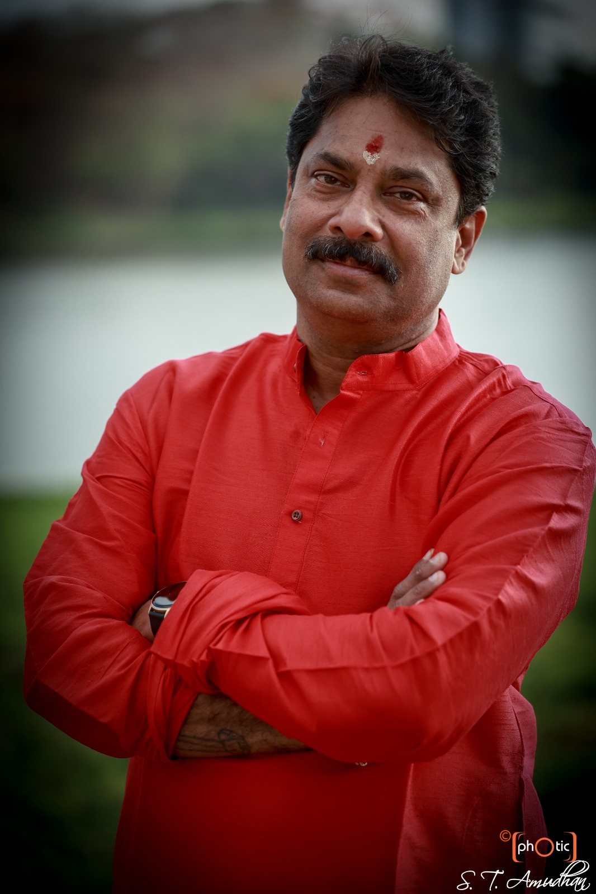
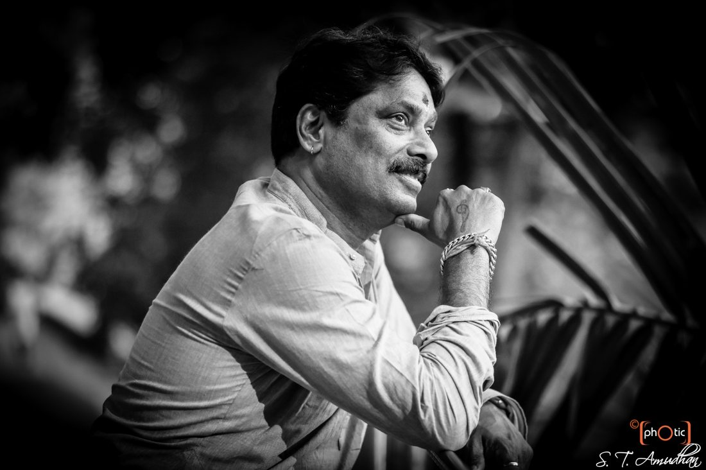
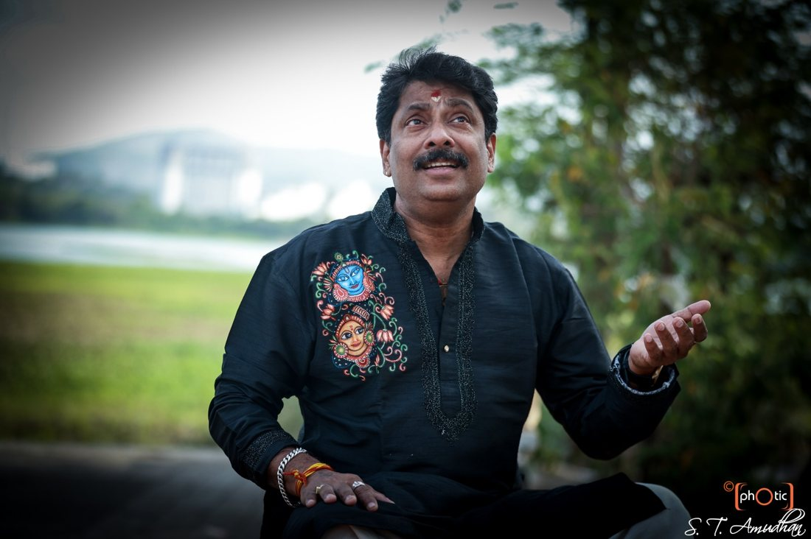

The story
Beginnings
Sivaprasad N. N. was born on the 30th of May, 1970, into a family of musicians and Kathakali artists. Music was not a career he chose so much as a language he grew up speaking. He gave his debut solo performance as a Carnatic vocalist at the age of nine, at the Eashwara Mangalam Mahaganapathy Temple.
He was awarded a Diploma in Carnatic Vocal by The Lalitha Kalalayam, recognised by the Kerala Sangeeta Nataka Academy, with a distinction in 1983. He trained in the Carnatic vocal style under Shri K. M. Krishnan in the Guru-Shishya Parampara, and received expert training in the Sopanam style under his father, Shri V. N. Narayanan Namboodiri, a renowned Sopanam singer in Kerala.


On stage, since 1987
He has performed on All India Radio and Doordarshan, on both regional and national programmes. As a lead vocalist he has been an integral part of countless dance performances, shows and arangetrams with renowned dance schools in Mumbai and across India, and in New York, Houston, Amsterdam, Switzerland, Norway, Italy, France and Germany, among other places.
He continues to perform as an independent Carnatic vocalist, and as a lead voice in bands that create fusion music and perform live jugalbandis with Hindustani vocal and instrumental traditions.
In the company of legends
A lead vocalist is trusted with the whole performance. These are a few of the names who have trusted his voice.
Shri Kelucharan Mohapatra · Kalaimamani Kadirvelu Pillai · Guru Ramaswamy Bhagavatar
Smt Chitra Vishveshwaran · Shri Vempatti Chinnasatyam · Kottakkal Nandakumar
Padmabhushan Smt Darshana Zhaveri · Guru Raji Narayan · Dr. Sandhya Purecha
Smt Mandakini Trivedi · Shri Deepak Mazumdar · Smt Kousalya Reddy
Shri Jayarama Rao · and many other celebrated artistes and performers
Four decades of accompaniment, across Bharatanatyam, Mohiniattam, Kuchipudi and Kathakali.
Teacher, mentor, founder
He is the Founder and Director of Shrutilaya Fine Arts, Vashi, under which he conducts festivals of dance and music to preserve, promote and propagate India's diverse cultural heritage, and to give a platform to upcoming artistes.
He has been a faculty member at the Bharata College of Fine Arts & Research Centre, Dadar, and continues to teach beginners and professional singers, to judge music competitions, and to serve as an examiner for Carnatic vocal examinations. He also conducts customised Music Therapy workshops for corporate teams and organisations.

A place where students, collaborators and family can find the work, and where the tradition is kept alive online for the years ahead.